性能测试概述
性能测试简介
性能测试是通过性能测试工具模拟 正常、峰值和异常负载条件 来对系统的各项性能指标进行测试。性能测试能够验证软件系统是否达到了用户期望的性能需求，同时也可以发现系统中可能存在的性能瓶颈和缺陷，从而优化系统的性能。
性能测试的目的主要由以下 4 个方面：
-
验证系统性能是否满足预期的性能需求，包括系统的执行效率、稳定性、可靠性、安全性等。
-
分析软件系统在各种负载水平下的运行状态，提高性能调整效率。
-
识别系统缺陷，寻找系统中可能存在的性能问题，定位系统性能瓶颈并解决问题。
-
进行系统调优，通过重复的、长时间的测试，找出系统中存在的隐含问题，改善并优化系统的性能。
性能测试种类
系统的性能覆盖面非常广，包括执行效率、资源占用、系统稳定性、安全性、兼容性、可靠性、可扩展性等。
性能测试是一个统称，它包含很多种类，例如基准测试、负载测试、压力测试、并发测试、配置测试、稳定性测试、容量测试等。
| 测试类型 | 描述 |
|---|---|
| 基准测试 | 监测被测系统在较低压力下的运行状况并记录相关数据 |
| 负载测试 | 评估被测系统在预期的不同负载下的行为 |
| 压力测试 | 用于评估被测系统在高于预期、高于指定容量负载需求 或低于最少需求资源的条件下的行为 |
| 并发测试 | 评估被测系统的某些特定操作同时发生时的性能表现 |
| 配置测试 | 测试各种软硬件环境对系统性能的影响 |
| 稳定性测试 | 测试系统在强负载条件下能否长时间稳定运行 |
| 容量测试 | 测试系统能支持的最大用户数、最大存储量等 |
基准测试
基准测试又称单用户测试，主要用于监测被测系统在较低压力下的运行状况并记录相关数据。当性能测试环境确定以后，通常选取业务模型中的重要业务做基准测试，对被测系统施加一定压力，从而获取被测系统在单用户运行情况下的各项性能指标，为多用户并发测试和混合场景测试等提供参考依据。
例如，同一个用户登录 10 次软件以测试登录所需的时间，最后得出 10 次登录平均所需时间为 3 秒。
例如，对于某商城 1.0 版本，模拟 5 万用户同时下单，硬件配置为 8 个 CPU、16 GB 内存，下单响应时间为 3 秒。以此基准线为标准，不改变其他条件，分别模拟 10 万、20 万等多组用户的下单响应时间。
负载测试
负载测试用于评估被测系统在预期的不同负载下的行为。负载测试关注系统处理不同负载的能力，这些负载可通过控制并发用户或者进程的数量来实现。
例如，一个软件系统的响应时间要求不超过 2 秒，如果在这个前提下不断增加用户访问量，系统的响应时间就会变长。假设当访问量超过 1 万人时系统的响应时间超过 2 秒，那么就可以确定在系统响应时间不超过 2 秒的前提下，系统的最大负载量是 1 万人。
压力测试
压力测试用于评估被测系统在高于预期、高于指定容量负载需求或低于最少需求资源的条件下的行为。进行压力测试时通常采用逐步增加系统负载的方式，使系统某些资源达到饱和甚至失效，从而发现那些只有在高负载条件下才会出现的缺陷，如同步问题、内存泄漏等。
压力测试与负载测试不同。负载测试是在保持性能指标要求的前提下测试系统能够承受的最大负载，而压力测试则是测试系统性能达到极限的状态。
例如，当系统访问量增加到 2 万时，发现系统响应时间延迟到 5 秒，而当访问量增加到 3 万时，系统则崩溃，无法做出响应。由此可以确定系统能达到的极限访问量是 3 万。
并发测试
并发测试用于评估被测系统的某些特定操作同时发生时的性能表现，如被测系统被多个用户同时登录时的响应能力，或系统的某一功能被多个用户同时操作时的性能表现。
通过并发测试，不仅可以获得被测系统在多用户并发操作时的性能指标，还可以发现被测系统在并发条件下可能发生的问题，如内存泄漏、线程锁、资源争用问题。
例如，通过模拟多个用户同时访问某一条件数据，或模拟多个用户同时更新数据，可能会发现被测系统的数据库访问错误、写入错误等。
配置测试
配置测试是指调整软件系统的软硬件环境，测试各种环境对系统性能的影响，从而找到系统各项资源的最优分配原则。
例如，安装版本更高的数据库、配置性能更好的 CPU 和内存等。
稳定性测试
稳定性测试指让系统在强负载情况下，持续运行一段时间（如 7 * 24 小时），测试系统在这种条件下能否稳定运行。
由于系统在强负载下有业务压力且运行时间较长，所以稳定性测试可以检测系统是否存在内存泄露问题。
容量测试
容量测试是指在一定的软硬件及网络环境下，测试系统能支持的最大用户数、最大存储量等。容量测试通常与数据库、系统资源（如 CPU、内存、磁盘等）有关，用于规划将来需求增长（如用户增长、业务量增加等）时，对数据库和系统资源的优化。
性能测试指标
性能测试不同于功能测试，功能测试只要求测试软件的功能是否实现，而性能测试要求测试软件功能的执行效率是否达到要求。
性能测试通常的指标包括响应时间、吞吐量、并发用户数、每秒查询数（QPS）、每秒事务数（TPS）、点击率、错误率、资源利用率等。
| 测试指标 | 描述 |
|---|---|
| 响应时间 | 用户从客户端发出请求到用户接收到返回数据的整个过程所需的时间 |
| 吞吐量 | 单位时间内，系统能够完成的工作量，如请求数/秒、访问人数/秒 |
| 并发用户数 | 在同一时间内，请求和访问的用户数量 |
| 每秒查询数 | 系统每秒能够响应的查询次数 |
| 每秒事务数 | 系统每秒能够处理的事务数量 |
| 点击率 | 用户每秒向 Web 服务器提交的 HTTP 请求数量 |
| 错误率 | 系统在负载情况下，业务失败的概率 |
| 资源利用率 | 软件系统对系统资源的利用率，如 CPU/内存/磁盘利用率等 |
JMeter 入门
安装 JMeter
登录 Apache JMeter 官网，Apache JMeter - Apache JMeter™，单击 apache-jmeter-5.6.3.zipsha512pgp，下载安装文件。
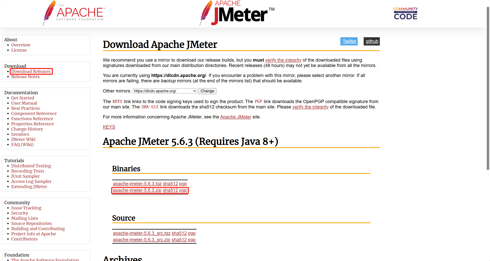JMeter 目录
-
bin 目录用于存储可执行文件和配置文件，bin 目录中常用的文件有以下 6 个：
-
jmeter.bat： JMeter 的 Windows 系统的启动文件，双击该文件可以启动 JMeter。
-
jmeter.log： JMeter 的日志文件。
-
jmeter.properties： JMeter 的配置文件，JMeter 的所有配置都在该文件中完成。
-
jmeter.sh：Linux/macOS 启动文件。
-
jmeter-server：Linux/macOS 分布测试启动文件。
-
jmeter-server.bat：Windows 系统分布式测试启动文件。
-
-
docs 目录为接口文档目录，存储 JMeter 官方的 API 文档。
-
extras 目录为扩展插件目录，存储 JMeter 与其他工具集成所需要的一些组件。
-
lib 目录用于存储 JMeter 依赖的 JAR 包和用户扩展（第三方）所依赖的 JAR 包。
-
licenses 目录存储的是 JMeter 的软件许可证，可以查看软件许可文件。
-
printable_docs 目录存储的是 JMeter 官方的帮助文档，可以查看 index.html 文件。
界面汉化
可以通过在菜单栏单击 “Options” → “Choose Language” → “Chinese（Simplified）“设置汉化页面。
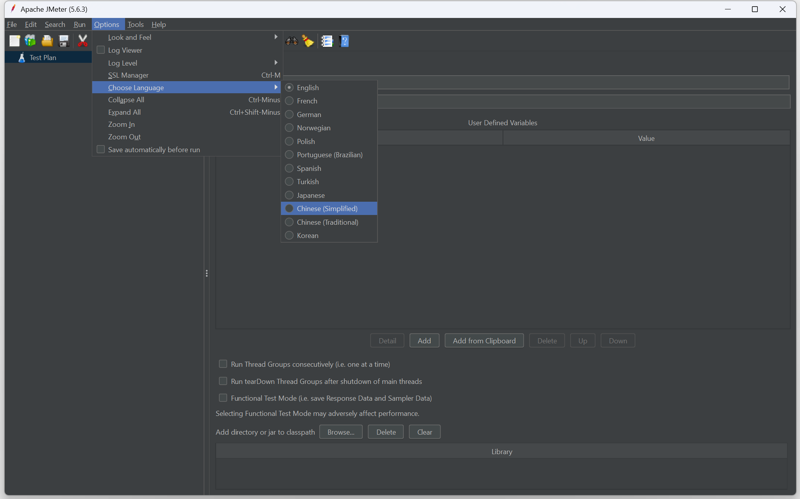但是这样设置的界面汉化只是临时性的，JMeter 重启之后，界面汉化就消失了，如果想永久汉化界面，需要在 jmeter.properties 文件中进行设置。
打开 jmeter.properties 文件，修改 language 的值为 zh_CN，配置完成后，取消前面的注释，保存文件后重启 JMeter 即可看到汉化界面。
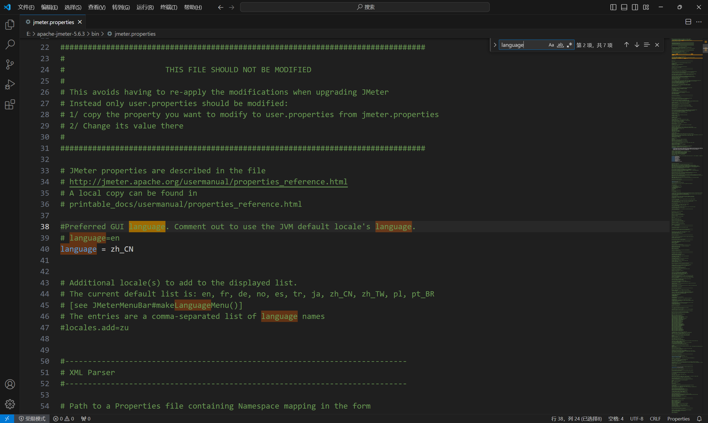第一个 JMeter 测试
添加测试计划
测试计划是 JMeter 的根元素，也是 JMeter 的管理单元。JMeter 中的所有测试内容都基于测试计划，每一个测试计划都可以模拟一定的特定场景，用户可以通过添加各种元件制定测试计划。
每次启动 JMeter 后，主界面都默认有一个空的测试计划，用户也可以在菜单栏单击 “文件，在弹出的下拉菜单中选择 “新建” 选项，添加测试计划。
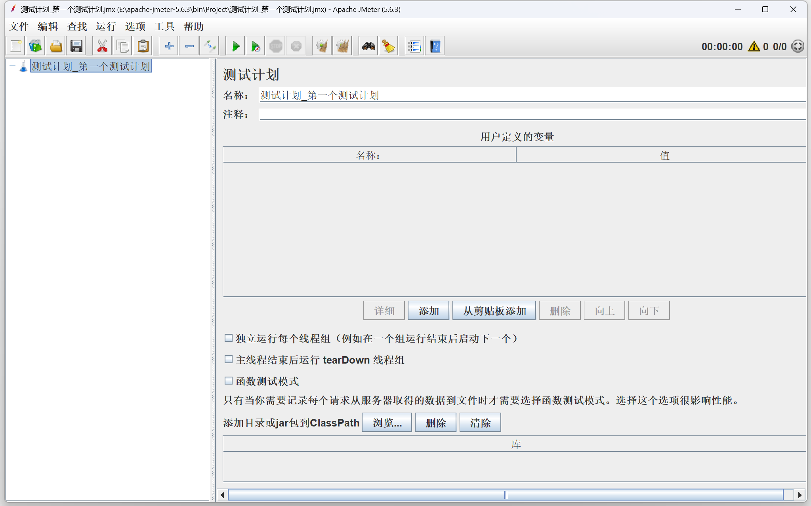添加线程组
保存好测试计划之后便可以添加线程组，线程组是测试计划的入口。右键单击 JMeter 左侧的测试计划，在弹出的菜单栏中选择 “添加” → “线程（用户）” → “线程组”。
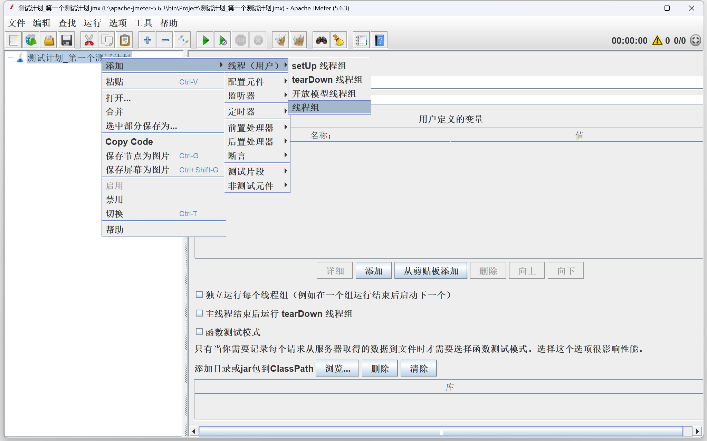此处线程组有 3 个选项，分别是 “setUp 线程组”、“tearDown 线程组”、“线程组”。
- setUp 线程组： 一种特殊类型的线程组，用于执行测试前的初始化操作。例如，测试购物网站在购物之前需要先登录，登录操作就可以在 setUp 线程组中配置。setUp 线程组执行顺序在普通线程组之前。
- tearDown 线程组： 一种特殊类型的线程组，用于执行测试结束周后的回收工作。例如，测试购物网站在购物结束之后需要退出登录，退出登录的操作就可以在 tearDown 线程组中配置。tearDown 线程组的执行顺序在普通线程组之后。
- 线程组： 普通线程组，一个线程组可以表示一个虚拟用户组，在线程组中可以设置线程数量，每一个线程都可以模拟一个虚拟用户。
线程组配置
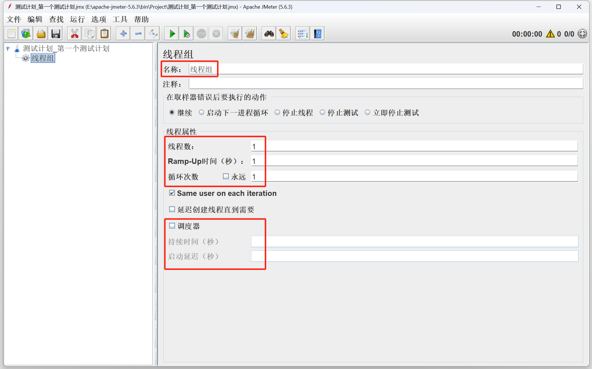线程组的主要配置项有以下几个：
- 名称： 用于为线程组命名。
- 线程数： 用于设置线程数量，即要模拟多少个用户。
- Ramp-Up 时间（秒）： 用于设置线程全部启动的时间。若线程数设置为 100，Ramp-Up 时间设置为 5，表示在 5 秒内启动 100 个线程，每秒启动的线程数为 20。
- 循环次数： 用于设置线程循环次数。如果勾选了 “永远” 复选框，则线程会一直循环。
- 调度器： 用于打开时间调试配置。勾选该复选框后，下方的 “持续时间（秒）” 和 “启动延迟（秒）” 才能设置。
- 持续时间（秒）： 用于设置线程组测试的持续时间。如果设置了持续时间，则以该事件为准，时间到则线程组测试结束，即使在循环次数中勾选了 “永远” 复选框，线程也不会一直循环。需要注意的是，持续时间设置的时间要比 Ramp-Up 时间设置的时间长，否则线程还未全部启动，测试就结束了。
- 启动延迟（秒）： 表示启动测试后多久开始创建线程，通常用于定时。
添加 HTTP 请求
HTTP 请求是用于发送请求的原件，在界面中选中 “线程组” 并右键单击，在弹出的快捷菜单中依次选择 “添加” → “取样器” → “HTTP请求”。
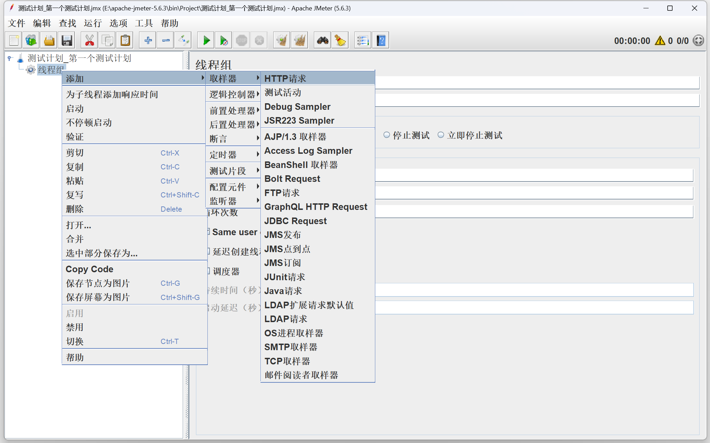添加成功后，在新界面中配置要发送的请求，例如请求的协议、服务器名称或 IP 地址、端口号、请求方式、路径等信息。
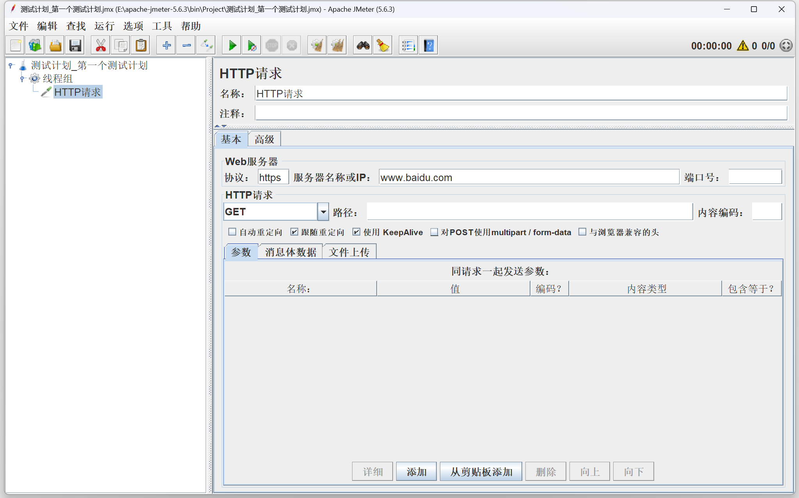添加查看结果树
完成 HTTP 请求的配置后，即可发送请求，但为了查看请求的结果信息，需要添加查看结果的元件。
选中 “线程组” 并右键单击，在弹出的快捷菜单中选择 “添加” → “监听器” → “查看结果树”。
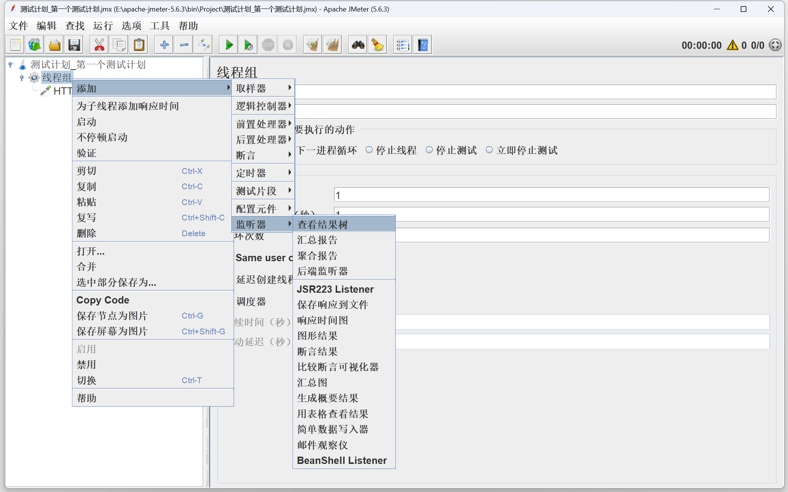在查看结果树下方，可以选择创建汇总报告，查看所有样本情况。
测试执行
查看结果树添加成功之后，单击工具栏中的绿色三角形启动按钮，JMeter 就会发送请求并接受服务器返回的结果。
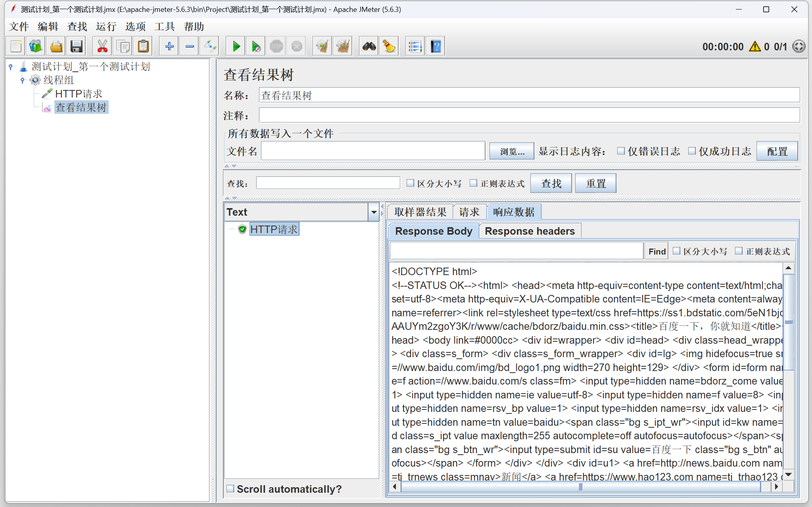什么是多线程
线程 是操作系统能够进行运算调度的最小单位。它被包含在 进程 之中，是进程中的实际运作单位。
进程
进程（Process）是计算机中的程序关于某数据集合上的一次运行活动，是系统进行资源分配的基本单位，是操作系统结构的基础。在早期面向进程设计的计算机结构中，进程是程序的基本执行实体；在当代面向线程设计的计算机结构中，进程是线程的容器。程序是指令、数据及其组织形式的描述，进程是程序的实体 —— 进程就是正在运行中的程序（进程是驻留在内存中的）。
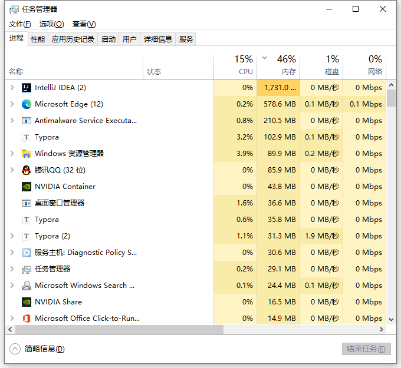- 是系统执行资源分配和调度的独立单位。
- 每一进程都有属于自己的存储空间和系统资源。
- 注意：进程 A 和进程 B 的内存独立不共享。
线程
线程（thread）是操作系统能够进行运算调度的最小单位。它被包含在进程之中，是进程中的实际运作单位。一条线程指的是进程中一个单一顺序的控制流， 一个进程中可以并发多个线程 ，每条线程并行执行不同的任务。
可以简单的将多线程理解为应用软件中的多个相互独立，可以同时运行的功能，有了多线程，我们就可以同时让程序做多件事情，提高效率。
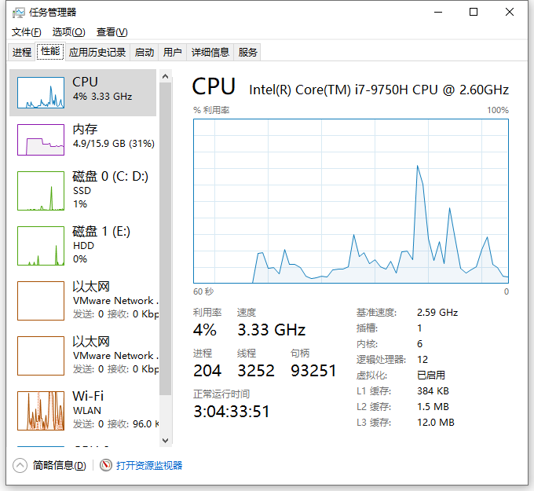-
单线程：一个进程中包含一个顺序控制流（一条执行路径）。
-
多线程：一个进程中包含多个顺序控制流（多条执行路径）。
-
对于单核的 CPU 来说，不能够做到真正的多线程并发，但是可以做到给人一种 “多线程并发” 的感觉。对于单核的 CPU 来说，在某一个时间点上实际上只能处理一件事情，但是由于 CPU 的处理速度极快，多个线程之间频繁切换执行，跟人来的感觉是多个事情同时在做。
并发
并发 ：在同一时刻，有多个指令在 单个 CPU 上 交替 执行。
早期计算机的 CPU 都是单核的，一个 CPU 在同一时间只能执行一个进程/线程，当系统中有多个进程/线程等待执行时，CPU 只能执行完一个再执行下一个。
计算机在运行过程中，有很多指令会涉及 I/O 操作，而 I/O 操作又是相当耗时的，速度远远低于 CPU，这导致 CPU 经常处于空闲状态，只能等待 I/O 操作完成后才能继续执行后面的指令。
为了提高 CPU 利用率，减少等待时间，人们提出了一种 CPU 并发工作的理论。
所谓并发，就是通过一种算法将 CPU 资源合理地分配给多个任务，当一个任务执行 I/O 操作时，CPU 可以转而执行其它的任务，等到 I/O 操作完成以后，或者新的任务遇到 I/O 操作时，CPU 再回到原来的任务继续执行。
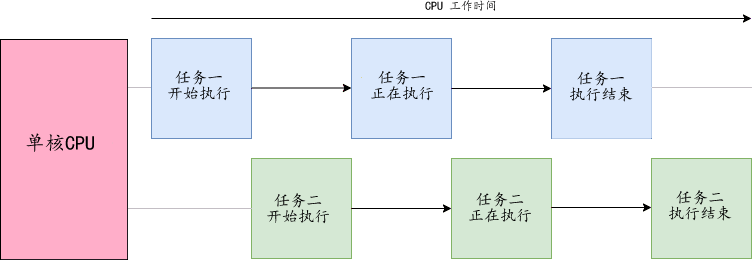 虽然 CPU 在同一时刻只能执行一个任务，但是通过将 CPU 的使用权在恰当的时机分配给不同的任务，使得多个任务在视觉上看起来是一起执行的。CPU 的执行速度极快，多任务切换的时间也极短，用户根本感受不到，所以并发执行看起来才跟真的一样。
操作系统负责将有限的 CPU 资源分配给不同的任务，但是不同操作系统的分配方式不太一样，常见的有：
- 当检测到正在执行的任务进行 I/O 操作时，就将 CPU 资源分配给其它任务。
- 将 CPU 时间平均分配给各个任务，每个任务都可以获得 CPU 的使用权。 在给定的时间内，即使任务没有执行完成，也要将 CPU 资源分配给其它任务，该任务需要等待下次分配 CPU 使用权后再继续执行。
将 CPU 资源合理地分配给多个任务共同使用，有效避免了 CPU 被某个任务长期霸占的问题，极大地提升了 CPU 资源利用率。
并行
并行 ：在同一时刻，有多个指令在 多个 CPU 上 同时 执行。
并发是针对单核 CPU 提出的，而并行则是针对多核 CPU 提出的。和单核 CPU 不同，多核 CPU 真正实现了“同时执行多个任务”。
|
|
多核 CPU 的每个核心都可以独立地执行一个任务，而且多个核心之间不会相互干扰。在不同核心上执行的多个任务，是真正地同时运行，这种状态就叫做并行。
例如，同样是执行两个任务，双核 CPU 的工作状态如下图所示：
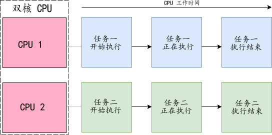 双核 CPU 执行两个任务时，每个核心各自执行一个任务，和单核 CPU 在两个任务之间不断切换相比，它的 执行效率更高 。
并发 + 并行
在上图中，执行任务的数量恰好等于 CPU 核心的数量，是一种理想状态。但是在实际场景中，处于运行状态的任务是非常多的，尤其是电脑和手机，开机就几十个任务，而 CPU 往往只有 4 核、8 核或者 16 核，远低于任务的数量，这个时候就会同时存在并发和并行两种情况：所有核心都要并行工作，并且每个核心还要并发工作。
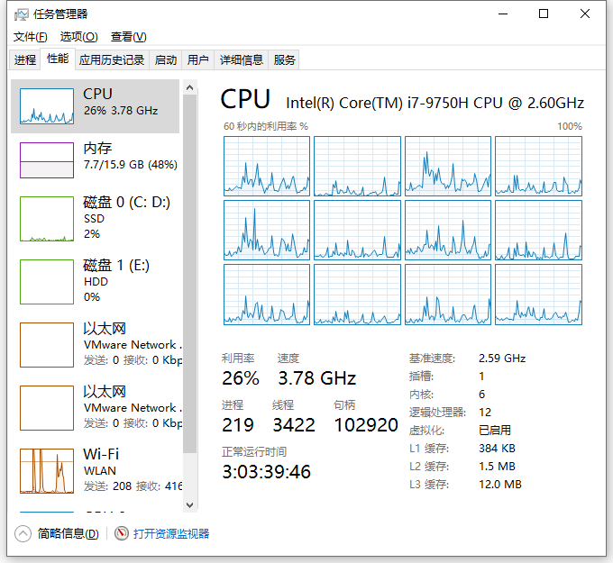 例如一个双核 CPU 要执行四个任务，它的工作状态如下图所示：
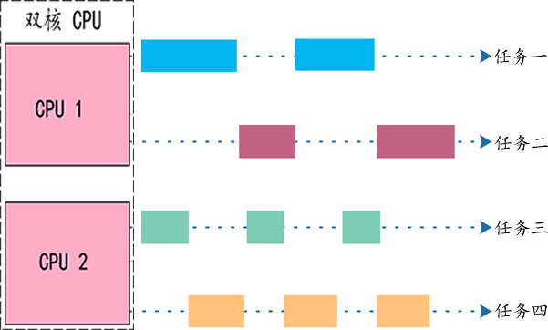 每个核心并发执行两个任务，两个核心并行的话就能执行四个任务。当然也可以一个核心执行一个任务，另一个核心并发执行三个任务，这跟操作系统的分配方式，以及每个任务的工作状态有关系。
线程数量如何控制
创建单个线程，设定持续时间，测试单个线程在一定时间内发起的请求数。
- 有明确的并发量目标时
- 并发量：1秒钟内服务器收到多少次请求 — 4600/s
- 线程数量理论计算公式 = 并发目标 / 单线程能够发起的请求量
- 查看系统性能
在实际性能测试中，我们很难得出精确的线程数量。
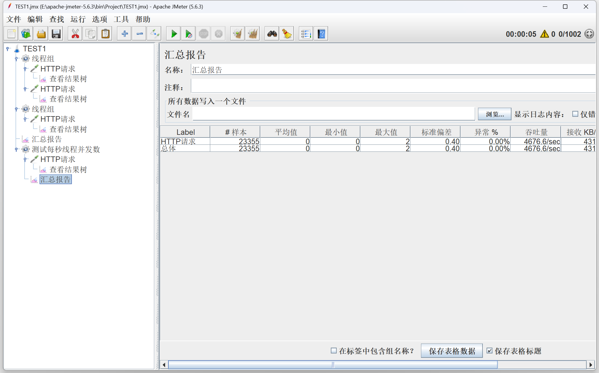JMeter 自动化测试
测试片段
测试片段可以把对应的模块放到对应的位置，支持即插即卸载，每个模块之间都是完全独立的，添加一个测试片段【测试计划–右键–添加–测试片段–测试片段】。
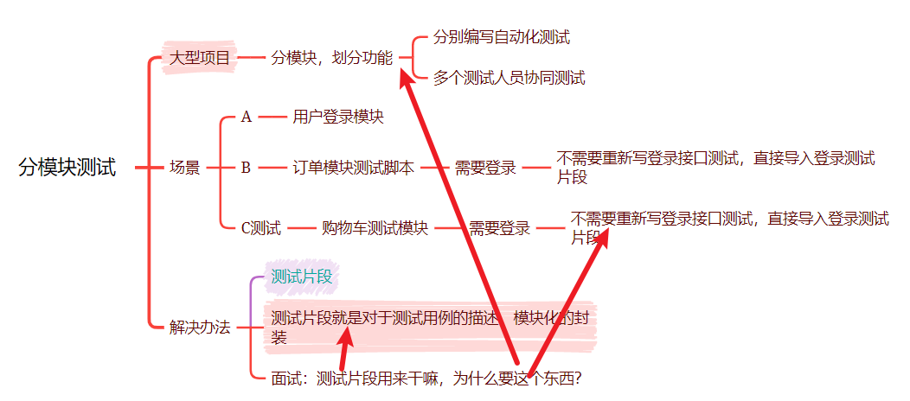公共变量维护
1、创建：添加->配置元件->用户定义的变量。
2、作用：当前的线程组内所有Sampler都可以引用变量，方便脚本更新；当参数发生变化时，只要在【用户定义的变量】中更新对应变量的参数即可，不需要逐个修改每个http中的参数。
3、变量定义：可以是具体的值，也可以是函数。
4、变量引用：Sample中引用变量的格式为${变量名}。
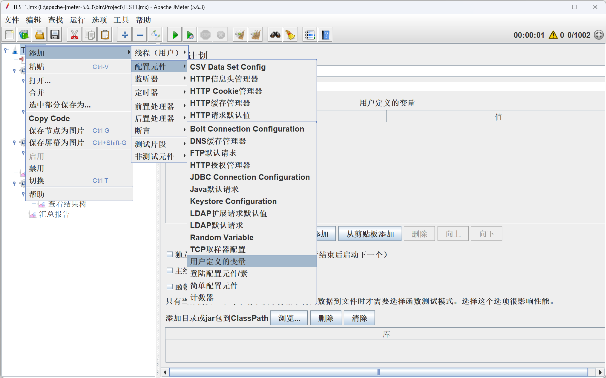CSV数据文件设置
CSV（CSV Data Set Config） 数据文件变量是指从外部 csv 文件读取数据出来作为变量。
测试计划->添加->配置元件->CSV 数据文件设置，查看CSV数据文件的各个要素。
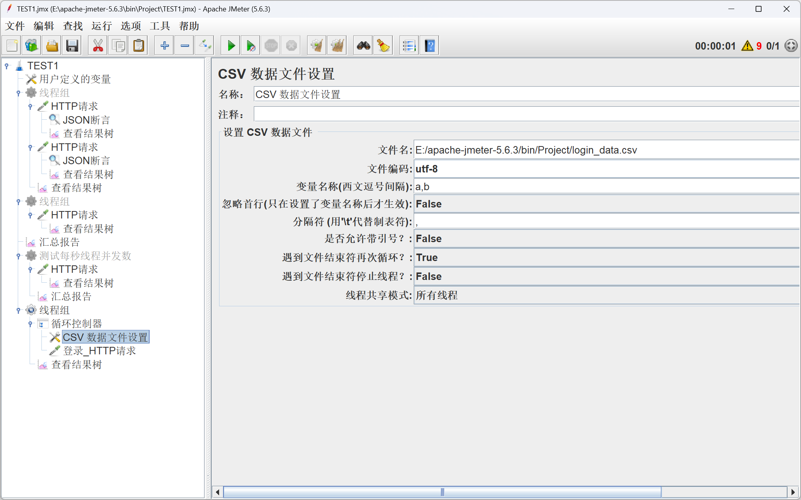如果需要多次执行，需要添加循环控制器，测试计划->添加->逻辑控制器->循环控制器。
JMeter 断言
响应断言
选中 JMeter 主界面的测试计划或 HTTP 请求并右键单击，在弹出的快捷菜单中依次选择 “添加” → “断言” → “响应断言”，会添加一个响应断言界面。
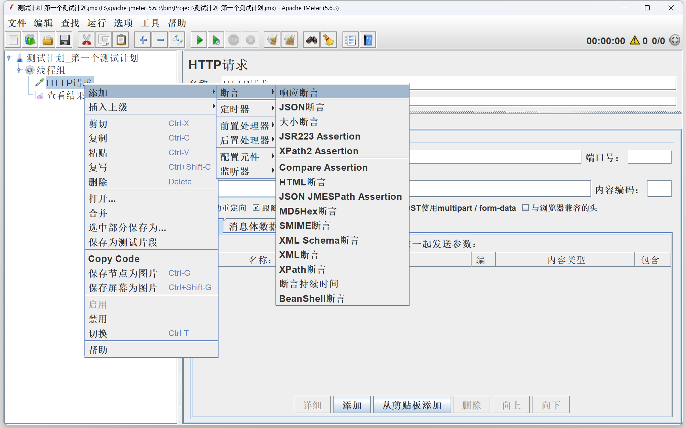界面主要分为 3 个部分，分别为测试字段、模式匹配规则、测试模式。
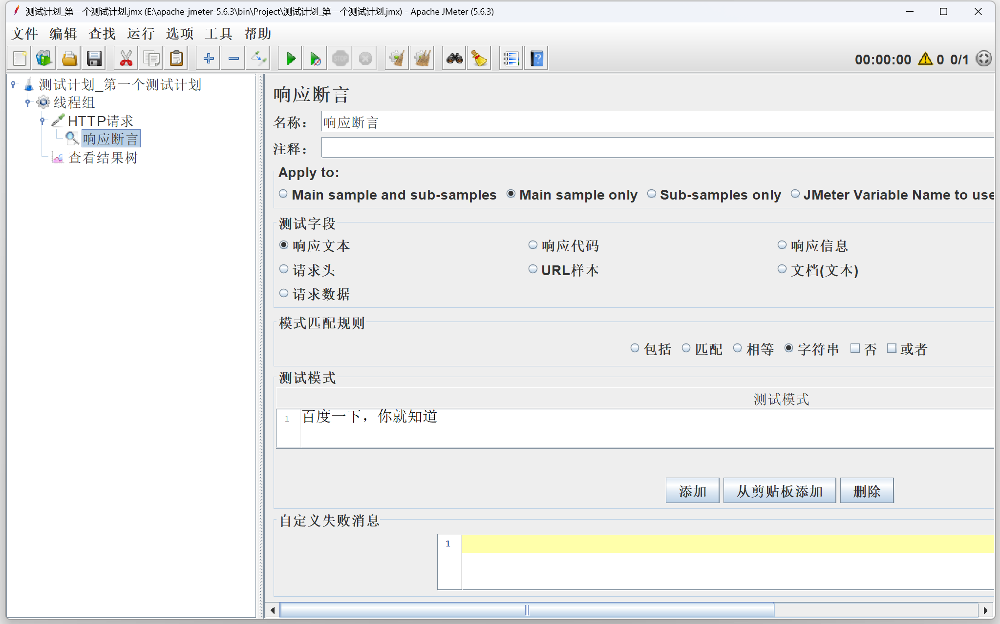JSON 断言
选中 JMeter 主界面的测试计划或 HTTP 请求并右键单击，在弹出的快捷菜单中依次选择 “添加” → “断言” → “JSON 断言”，会添加一个 JSON 断言界面。
其中，各配置项含义如下：
- Assert JSON Path exists：用于配置要断言的 JSON 元素的路径。
- Additionally assert value：是否要使用指定的值生成断言。
- Match as regular expression：使用正则表达式断言。
- Expected Value：期望值，如果勾选了 “Additionally assert value” 复选框，则填写。
- Expected null：期望值为 null。
- Invert assertion：反转断言，断言成功时，如果勾选该复选框，则断言失败。
案例练习
-
创建公共变量，定义变量 host，值为 127.0.0.1，定义变量 port，值为 80。
-
创建线程组 1，设置线程数为 1，持续时间为 3 秒。
-
在线程组 1 中创建请求，使用 post 方法登录 byhy 系统，创建汇总报告，观察吞吐量。
-
禁用线程组 1，创建线程组 2，创建 csv 文件，包含 3 组数据。
-
在线程组 2 中使用该数据发送登录 http 请求并创建 json 断言，判断 ret 的值。